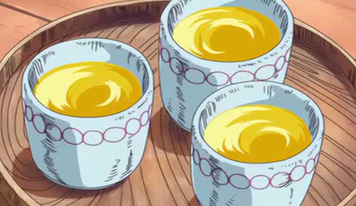

Gan Fall's Pumpkin Juice
Recipes

Description
Gan Fall, former God of Skypiea, is quite fond of his pumpkin garden, and especially what he makes with it. His juice while simple, can provide the comfort needed
to go out and defeat a god of lightning, even without a rubber body (or at least cope with the dude's existence).
This recipe makes 3-4 cups.
Ingredients
- ~1/4 (300g) pumpkin
- 300ml water
- 2 tbsp. honey
- 2 tbsp. granulated sugar (adjust to taste)
- milk (to taste)
Steps
- Remove pumpkin seeds and skin.
Cut into 1 cm thick slices.
Put in a small pot, add water, and simmer over medium heat.
When it becomes soft, remove from heat, and cool (A).
- Add 1’s ingredients to a mixer. Add honey, and sugar, mix. Then chill in refrigerator.
- Pour 2’s ingredients into a glass. Add milk as desired. Drink while mixing.